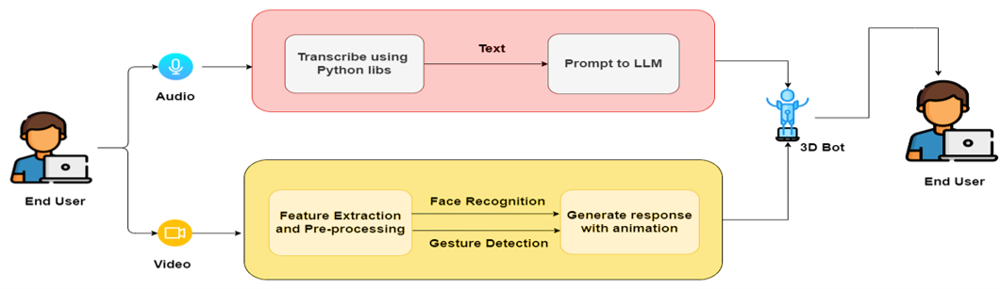
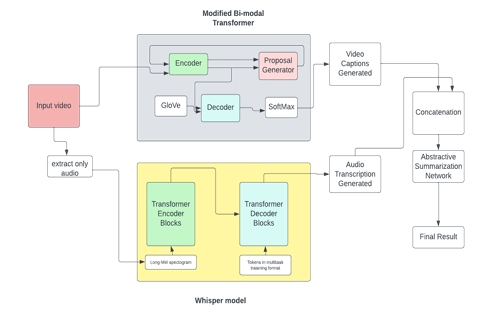

(B.E. Capstone Project)
Description: The integration of 3D technology and artificial intelligence (AI) is revolutionizing the way that immersive and interactive user experiences are created in today's digital world. The goal of this research is to create a dynamic and engaging user interface by utilizing the complementary abilities of three-dimensional environments and generative AI models...
Projects in Collaboration with Siddhesh Madkaikar Vipul Belhekar
(T.E Capstone Project)
Description: The Video Summary using AI is a cutting-edge web application designed to automatically generate concise and accurate summaries of long videos. By leveraging advanced models like the Bi-modal Transformer (BMT) and OpenAI's Whisper model, the system provides seamless and efficient video summarization, making content more digestible and time-efficient for users. This application is ideal for summarizing educational videos, corporate meetings, webinars, and more, significantly reducing the time users need to extract key insights from video content.
Projects in Collaboration with Siddhesh Madkaikar Vipul Belhekar
(Android Application)
Description: The Smart Music Player is an Android-based application designed with accessibility in mind, particularly for people with physical disabilities. It leverages Google Voice-to-Text API to enable hands-free control, making it easier for users to interact with the player using voice commands. This project, aimed at improving accessibility in everyday technology, became the runner-up at the National Hackathon 2021. The music player supports standard functionalities such as play, pause, resume, and file browsing, allowing disabled users to enjoy an inclusive digital experience with ease.